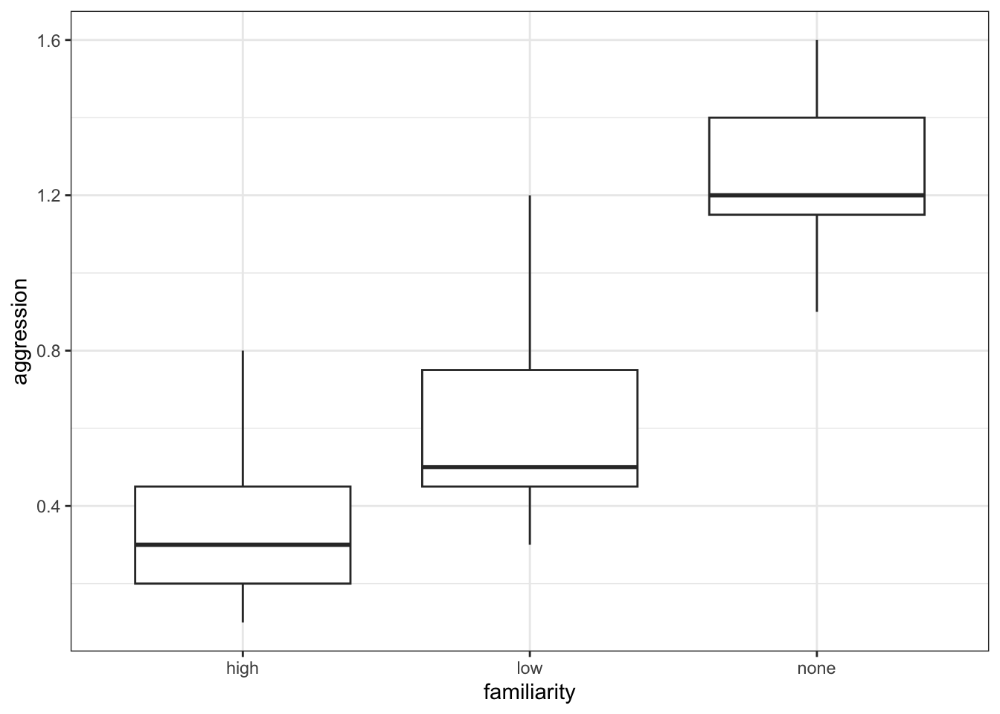
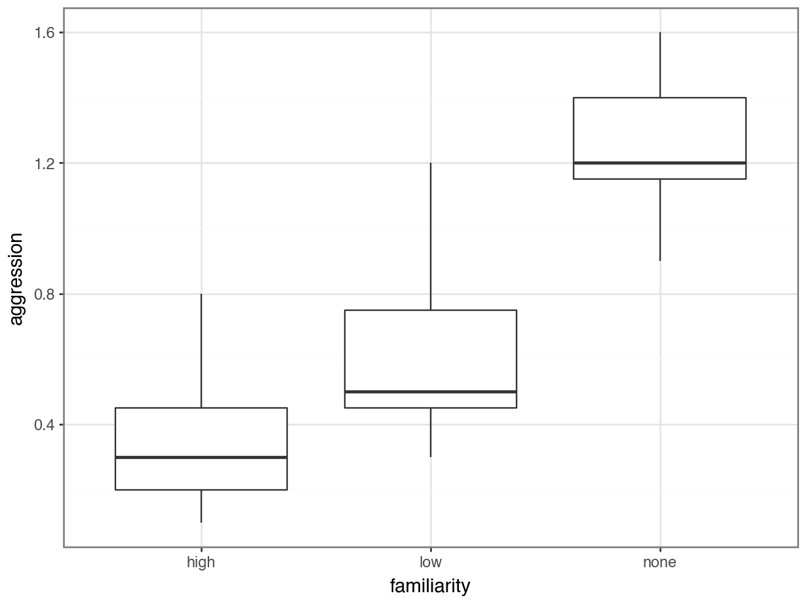

# A collection of R packages designed for data science
library(tidyverse)
# Converts stats functions to a tidyverse-friendly format
library(rstatix)
# Creates diagnostic plots using ggplot2
library(ggResidpanel)8 Kruskal-Wallis
TipLearning outcomes
Questions
- How do I analyse multiple samples of continuous data if the data are not normally distributed?
- What is a Kruskal-Wallis test?
- How do I check for differences between groups?
Objectives
- Be able to perform an Kruskal-Wallis test in R
- Understand the output of the test and evaluate the assumptions
- Be able to perform post-hoc testing after a Kruskal-Wallis test
8.1 Purpose and aim
The Kruskal-Wallis one-way analysis of variance test is an analogue of ANOVA that can be used when the assumption of normality cannot be met. In this way it is an extension of the Mann-Whitney test for two groups.
8.2 Libraries and functions
NoteClick to expand
8.2.1 Libraries
8.2.2 Functions
# Performs a Kruskal-Wallis test
stats::kruskal.test()
# Performs Dunn's test for pairwise multiple comparisons of the ranked data
rstatix::dunn_test()8.2.3 Libraries
# A Python data analysis and manipulation tool
import pandas as pd
# Simple yet exhaustive stats functions.
import pingouin as pg
# Python equivalent of `ggplot2`
from plotnine import *
# Post-hoc tests
import scikit_posthocs as sp
# Statistical models, conducting tests and statistical data exploration
import statsmodels.api as sm
# Convenience interface for specifying models using formula strings and DataFrames
import statsmodels.formula.api as smf8.2.4 Functions
# Summary statistics
pandas.DataFrame.describe()
# Plots the first few rows of a DataFrame
pandas.DataFrame.head()
# Reads in a .csv file
pandas.DataFrame.read_csv()
# Performs an analysis of variance
#pingouin.anova()
# Tests for equality of variance
pingouin.homoscedasticity()
# Performs the Kruskal-Wallis test
pingouin.kruskal
# Performs the Shapiro-Wilk test for normality
pingouin.normality()
# Creates a model from a formula and data frame
statsmodels.formula.api.ols
# Creates an ANOVA table for one or more fitted linear models
statsmodels.stats.anova.anova_lm8.3 Data and hypotheses
For example, suppose a behavioural ecologist records the rate at which spider monkeys behaved aggressively towards one another, as a function of how closely related the monkeys are. The familiarity of the two monkeys involved in each interaction is classified as high, low or none. We want to test if the data support the hypothesis that aggression rates differ according to strength of relatedness. We form the following null and alternative hypotheses:
- \(H_0\): The median aggression rates for all types of familiarity are the same
- \(H_1\): The median aggression rates are not all equal
We will use a Kruskal-Wallis test to check this.
The data are stored in the file data/CS2-spidermonkey.csv.
8.4 Summarise and visualise
First we read the data in:
spidermonkey <- read_csv("data/CS2-spidermonkey.csv")# look at the data
spidermonkey# A tibble: 21 × 3
id aggression familiarity
<dbl> <dbl> <chr>
1 1 0.2 high
2 2 0.1 high
3 3 0.4 high
4 4 0.8 high
5 5 0.3 high
6 6 0.5 high
7 7 0.2 high
8 8 0.5 low
9 9 0.4 low
10 10 0.3 low
# ℹ 11 more rows# summarise the data
spidermonkey %>%
select(-id) %>%
group_by(familiarity) %>%
get_summary_stats(type = "common")# A tibble: 3 × 11
familiarity variable n min max median iqr mean sd se ci
<chr> <fct> <dbl> <dbl> <dbl> <dbl> <dbl> <dbl> <dbl> <dbl> <dbl>
1 high aggression 7 0.1 0.8 0.3 0.25 0.357 0.237 0.09 0.219
2 low aggression 7 0.3 1.2 0.5 0.3 0.629 0.315 0.119 0.291
3 none aggression 7 0.9 1.6 1.2 0.25 1.26 0.23 0.087 0.213# create boxplot
ggplot(spidermonkey,
aes(x = familiarity, y = aggression)) +
geom_boxplot()
First we read the data in:
spidermonkey_py = pd.read_csv("data/CS2-spidermonkey.csv")# look at the data
spidermonkey_py.head() id aggression familiarity
0 1 0.2 high
1 2 0.1 high
2 3 0.4 high
3 4 0.8 high
4 5 0.3 high# summarise the data
spidermonkey_py.describe()["aggression"]count 21.000000
mean 0.747619
std 0.460021
min 0.100000
25% 0.400000
50% 0.600000
75% 1.200000
max 1.600000
Name: aggression, dtype: float64# create boxplot
p = (ggplot(spidermonkey_py,
aes(x = "familiarity",
y = "aggression")) +
geom_boxplot())
p.show()
The data appear to show a very significant difference in aggression rates between the three types of familiarity. We would probably expect a reasonably significant result here.
8.5 Assumptions
To use the Kruskal-Wallis test we have to make three assumptions:
- The parent distributions from which the samples are drawn have the same shape (if they’re normal then we should use a one-way ANOVA)
- Each data point in the samples is independent of the others
- The parent distributions should have the same variance
Independence we’ll ignore as usual. Similar shape is best assessed from the earlier visualisation of the data. That means that we only need to check equality of variance.
8.5.1 Equality of variance
We test for equality of variance using Levene’s test (since we can’t assume normal parent distributions which rules out Bartlett’s test).
# perform Levene's test
levene_test(aggression ~ familiarity,
data = spidermonkey)Warning in leveneTest.default(y = y, group = group, ...): group coerced to
factor.# A tibble: 1 × 4
df1 df2 statistic p
<int> <int> <dbl> <dbl>
1 2 18 0.114 0.893The relevant p-value is given in the p column (0.893). As it is quite large we see that each group do appear to have the same variance.
There is also a warning about group coerced to factor. There is no need to worry about this - Levene’s test needs to compare different groups and because familiarity is encoded as a character value, it converts it to a categorical one before running the test.
We can run Levene’s test with the pg.homoscedasticity() function. We previously used this for Bartlett’s test, but it allows us to define Levene’s instead.
pg.homoscedasticity(dv = "aggression",
group = "familiarity",
method = "levene",
data = spidermonkey_py) W pval equal_var
levene 0.113924 0.892964 True8.6 Implement and interpret the test
Perform a Kruskal-Wallis test on the data:
# implement Kruskal-Wallis test
kruskal.test(aggression ~ familiarity,
data = spidermonkey)
Kruskal-Wallis rank sum test
data: aggression by familiarity
Kruskal-Wallis chi-squared = 13.597, df = 2, p-value = 0.001115- The first argument must be in the formula format:
variable ~ category - The second argument must be the name of the data frame
The p-value is given in the 3rd line. This shows us the probability of getting samples such as ours if the null hypothesis were actually true.
We can use the kruskal() function from pingouin to perform the Kruskal-Wallis test:
pg.kruskal(dv = "aggression",
between = "familiarity",
data = spidermonkey_py) Source ddof1 H p-unc
Kruskal familiarity 2 13.597156 0.001115Since the p-value is very small (much smaller than the standard significance level of 0.05) we can say “that it is very unlikely that these three samples came from the same parent distribution and as such we can reject our null hypothesis” and state that:
A Kruskal-Wallis test showed that aggression rates between spidermonkeys depends upon the degree of familiarity between them (p = 0.0011).
8.7 Post-hoc testing (Dunn’s test)
The equivalent of Tukey’s range test for non-normal data is Dunn’s test.
Dunn’s test is used to check for significant differences in group medians:
The dunn_test() function comes from the rstatix package, so make sure you have that loaded.
# perform Dunn's test
dunn_test(aggression ~ familiarity,
data = spidermonkey)# A tibble: 3 × 9
.y. group1 group2 n1 n2 statistic p p.adj p.adj.signif
* <chr> <chr> <chr> <int> <int> <dbl> <dbl> <dbl> <chr>
1 aggression high low 7 7 1.41 0.160 0.160 ns
2 aggression high none 7 7 3.66 0.000257 0.000771 ***
3 aggression low none 7 7 2.25 0.0245 0.0490 * The dunn_test() function performs a Kruskal-Wallis test on the data, followed by a post-hoc pairwise multiple comparison.
The comparison between the pairs of groups is reported in the table at the bottom. Each row contains a single comparison. We are interested in the p and p.adj columns, which contain the the p-values that we want. This table shows that there isn’t a significant difference between the high and low groups, as the p-value (0.1598) is too high. The other two comparisons between the high familiarity and no familiarity groups and between the low and no groups are significant though.
The dunn_test() function has several arguments, of which the p.adjust.method is likely to be of interest. Here you can define which method needs to be used to account for multiple comparisons. The default is "holm". We’ll cover more about this in the chapter on Power analysis.
Unfortunately pingouin does not seem to have function that can perform Dunn’s test, so we need to import this from elsewhere.
There is a series of post-hocs tests available via scikit_posthocs. You’ll need to install this by running:
pip install scikit-posthocsAfter installation, load it with:
import scikit_posthocs as spFinally, we can perform Dunn’s test as follows:
sp.posthoc_dunn(spidermonkey_py,
val_col = "aggression",
group_col = "familiarity") high low none
high 1.000000 0.159777 0.000257
low 0.159777 1.000000 0.024493
none 0.000257 0.024493 1.000000The p-values of the pairwise comparisons are reported in the table. This table shows that there isn’t a significant difference between the high and low groups, as the p-value (0.1598) is too high. The other two comparisons between the high familiarity and no familiarity groups and between the low and no groups are significant though.
The sp.posthoc_dunn() function has several arguments, of which the p_adjust is likely to be of interest. Here you can define which method needs to be used to account for multiple comparisons. We’ll cover more about this in the chapter on Power analysis.
8.8 Exercises
8.8.1 Lobster weight (revisited)
8.10 Summary
TipKey points
- We use a Kruskal-Wallis test to see if there is a difference in medians between multiple continuous response variables
- We assume parent distributions have the same shape; each data point is independent and the parent distributions have the same variance
- We test for equality of variance using Levene’s test
- Post-hoc testing to check for significant differences in the group medians is done with Dunn’s test